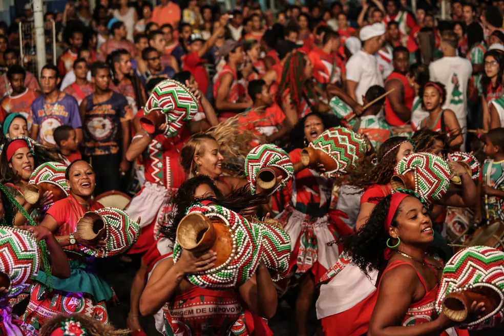
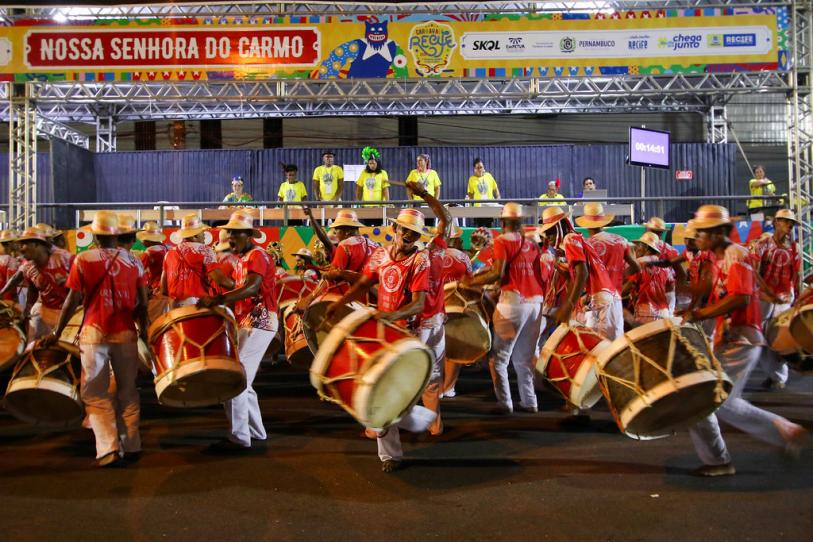
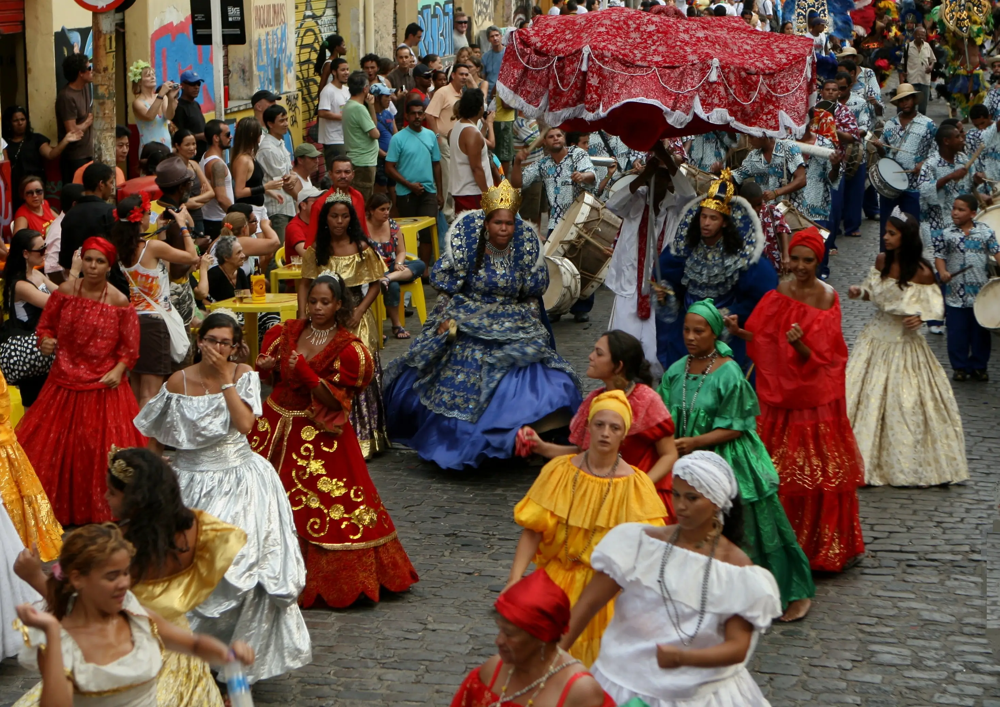

“Ser pernambucano é sentir o maracatu” - Katarina Real.
Não se pode compreender o carnaval da Região Metropolitana do Recife sem considerar a presença secular das nações de maracatu, com seus batuques, compostos de tambores, caixas, mineiros e gonguês, e os coloridos pálios que anunciam a presença de reis e rainhas, além de toda sua corte real, calungas e damas do paço.
O maracatu nação, também conhecido como maracatu de baque virado, é uma manifestação artística da cultura popular e carnavalesca da Região Metropolitana do Recife em que um cortejo real desfila pelas ruas, acompanhado de um conjunto musical percussivo. Composto majoritariamente por negros e negras, os maracatus nação podem ser remontados às antigas coroações de reis e rainhas congo. Passaram por transformações e mudanças ao longo do século XX, demonstrando sua capacidade de adaptação e permanência. Trata-se, portanto, de uma forma de expressão da cultura negra, que tem sido considerada primordial na definição das identidades culturais pernambucanas, herança e resistência de negros e negras do passado. É uma manifestação performática que engloba dança e música, considerada, no âmbito deste inventário, como uma forma de expressão, assim compreendida pelo fato de cortejo e percussão serem indissociáveis.
O maracatu nação foi classificado e descrito de modo sistemático por César Guerra Peixe em sua obra Maracatus do Recife, publicada em 1955, considerada uma referência fundamental para quem quiser se iniciar nos seus mistérios musicais e entender sua história. O maestro foi o primeiro estudioso a distinguir os grupos homônimos, oriundos da zona da mata pernambucana, que desfilavam também no carnaval, nas décadas de 1930 e 1949. Esses grupos diferenciavam-se radicalmente das nações negras e foram designados de maracatu de baque solto, ou maracatu de orquestra.
Desde então, o maracatu nação foi intensamente referido por intelectuais, notadamente os folcloristas, como uma manifestação essencial na cultura pernambucana, mas recorrentemente descrito como se estivesse destinado a desaparecer.
Ivaldo Marciano de França Lima, historiador e também maracatuzeiro, vem demonstrando em suas obras que, apesar de existirem em pequeno número e agregarem poucos participantes, os maracatus nação, desde a década de 1960, eram portadores de uma intensa dinâmica cultural responsável por sua permanência no carnaval. Dessa forma, os maracatus têm uma longa e complexa história, da qual muitos negros e negras pernambucanos se orgulham. Hoje essas nações são responsáveis pela afirmação de uma identidade negra. Nesse sentido, os maracatus nação vêm colaborando com as políticas públicas de promoção da igualdade racial levadas a efeito em Pernambuco, contribuindo para a valorização da cultura negra não só em Pernambuco, mas em todo o Brasil. A dimensão identitária dos maracatus nação pode ser percebida, por conseguinte, em uma dupla perspectiva. A primeira ressalta sua dimensão histórica, considerada por maracatuzeiros e maracatuzeiras como uma manifestação que sinaliza a resistência de negros na manutenção de suas práticas culturais. A segunda destaca sua capacidade de agregar as comunidades e, consequentemente, valor à manifestação, responsável pela positivação de práticas culturais negras. Esses aspectos históricos e identitários configuram o maracatu nação como um patrimônio cultural para quem o faz, bem como para pernambucanos e brasileiros
